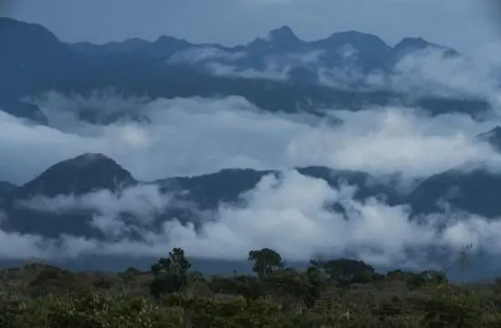
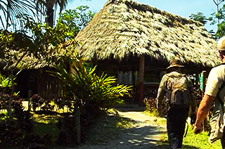
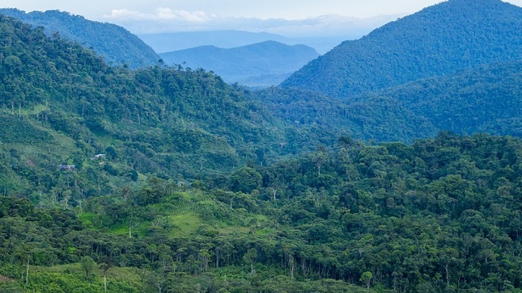

Bosque de Protección de Alto Mayo: Un santuario de biodiversidad en la Amazonía peruana
Ubicado en la región de San Martín, el Bosque de Protección de Alto Mayo es un área natural protegida que alberga una increíble diversidad de flora y fauna. Es un destino ideal para los amantes del ecoturismo y la conservación ambiental.
Historia
Creado en 1987, el Bosque de Protección de Alto Mayo tiene como objetivo preservar los recursos hídricos y la biodiversidad de la región. Ha sido clave en la conservación de especies en peligro y en la promoción de prácticas sostenibles entre las comunidades locales.



Horarios y Ubicación
- Ubicación: Región de San Martín, Perú.
- Horario de visita: De 6:00 a.m. a 4:00 p.m.
- Costo de entrada: Accesible para visitantes nacionales y extranjeros.
Consejos para Visitantes
- Usa ropa adecuada: Ropa ligera pero de manga larga para protegerse de insectos y vegetación densa.
- Lleva repelente de insectos: Es esencial para evitar picaduras en la selva.
- Respeta la biodiversidad: No alteres el entorno natural y evita dejar residuos.
- Explora con un guía: Para aprender más sobre la flora, fauna y conservación del bosque.
- Consulta el clima: La lluvia puede afectar los senderos, por lo que es recomendable revisar el pronóstico antes de la visita.